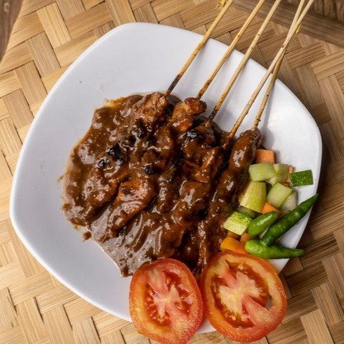

Yummers Recipes
Brownies

Kue cokelat klasik dengan tekstur lembut dan fudgy, kaya rasa cokelat yang meleleh di mulut. Nikmati sebagai camilan manis atau hidangan penutup yang selalu bikin ketagihan!
Read More...
Dimsum
Kudapan kecil berisi daging cincang, udang, atau sayuran yang dibungkus kulit tipis, lalu dikukus hingga matang. Setiap gigitan dimsum menawarkan tekstur lembut dan rasa yang kaya, sempurna disantap bersama saus cocol spesial.
Read More...
Sate Ayam
Potongan daging ayam yang juicy, dibakar hingga sempurna dan dilumuri bumbu kacang gurih nan manis. Sajikan dengan lontong, sambal, dan taburan bawang goreng untuk cita rasa autentik yang menggugah selera.
Read More...
Nasi Goreng

Perpaduan sempurna nasi yang digoreng dengan bumbu rempah khas, kecap manis, dan tambahan topping seperti telur, ayam, atau udang. Hidangan sederhana yang selalu jadi favorit di segala suasana!
Read More...
Monthly Popular Recipes
Contact Us
Contact Information
+6281290086542
info@yummers.com
34 Street, Jakarta, Indonesia